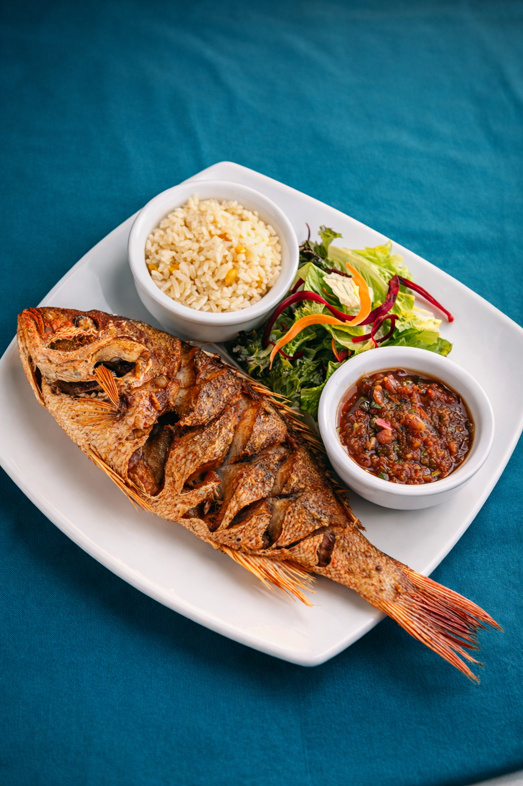
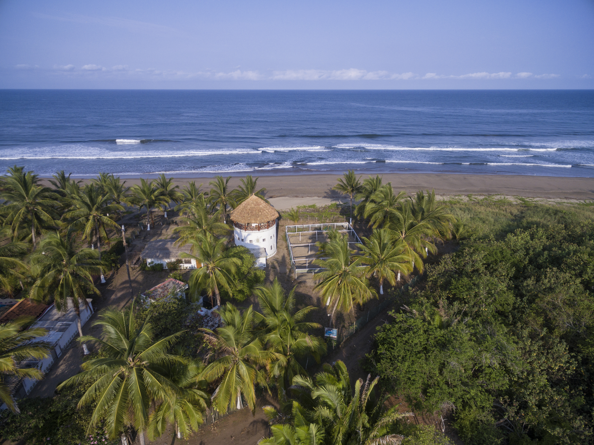
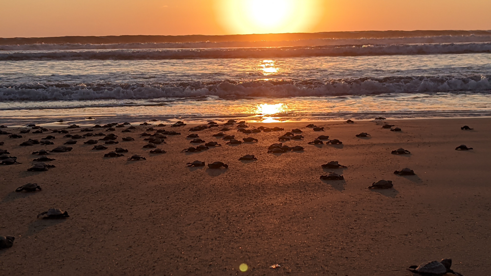
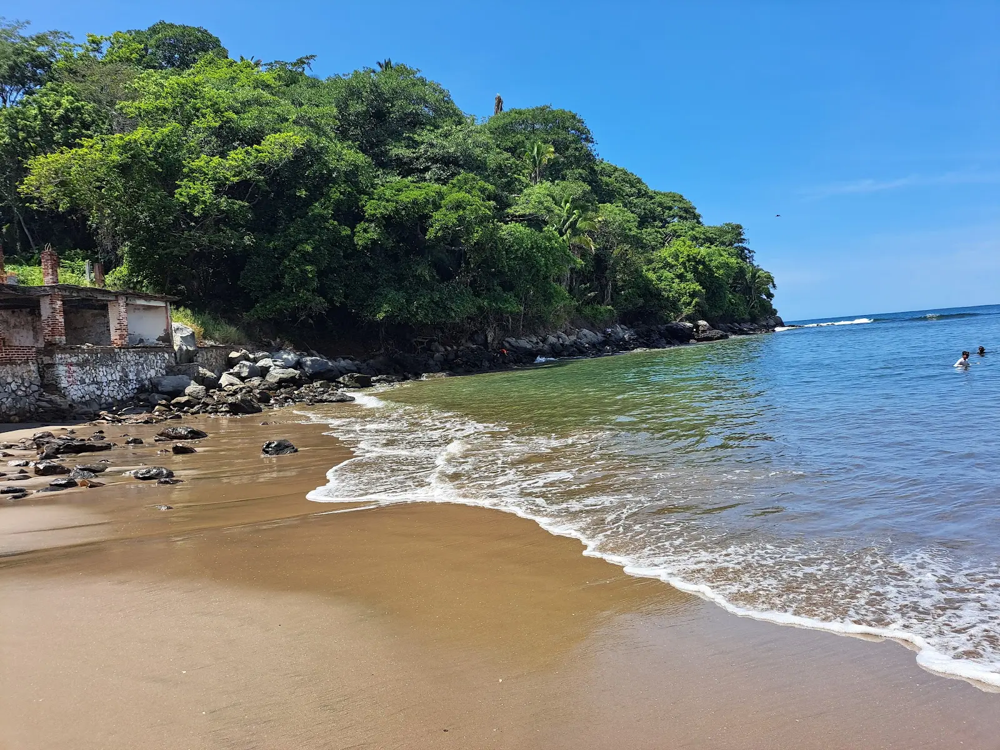

Sabor, Tradición y Aguas Tranquilas
Ubicada en una hermosa bahía en forma de media luna, Playa Platanitos es famosa por sus aguas extremadamente mansas y su ambiente rústico tradicional.
Es el lugar perfecto para quienes disfrutan de la gastronomía del mar: sus palapas a la orilla de la playa ofrecen el pescado zarandeado más fresco de la región, todo mientras disfrutas de una vista espectacular donde el verde de los manglares se une con el azul del Pacífico.




Naturaleza y buen comer en un solo lugar
La actividad principal aquí es comer bien. Elige tu pescado fresco y espera en una hamaca mientras lo preparan al carbón.
Realiza un paseo en lancha por el estero cercano para observar una gran variedad de aves exóticas y naturaleza virgen.
La bahía protege la playa del oleaje fuerte, creando un ambiente seguro para nadar, ideal para familias con niños pequeños.
Visita el campamento local encargado de proteger a las tortugas marinas que llegan a desovar cada temporada.
Los alrededores ofrecen senderos y caminos rurales perfectos para explorar en bicicleta si buscas algo de acción.
Algunas zonas permiten acampar bajo las palmeras, una experiencia rústica para despertar con el sonido del mar.
Platanitos es un destino rústico y auténtico. Toma nota de esto:
Costa Sur de Compostela
Rústico y Familiar
Pescado Zarandeado
Limitada / Baja
Playa Platanitos te espera con la mesa puesta y la brisa fresca.
Ver en Google Maps